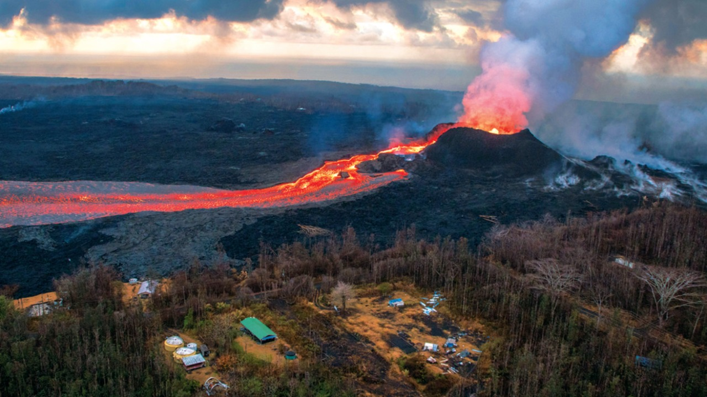
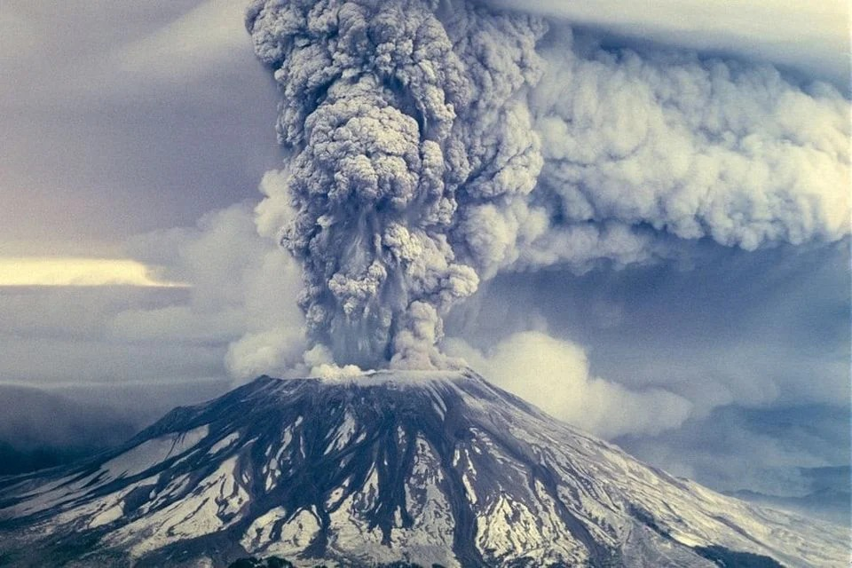

KILAUEA
O Kīlauea é um vulcão localizado no Parque Nacional de Vulcões do Havaí. Ele possui uma altura em cerca de 1.247 metros e existe há 600.000 anos. Em dezembro de 2005 uma parede de rochas rompeu, causando um abismo de 18 metros à beira do mar e um rio de lava do Kilauea, que formou uma plataforma que dá continuidade à ilha.
A queda de lava e rochas é a maior já registrada no Kilauea desde que entrou em erupção, em 1983. O vulcão tornou-se uma atração turística a partir de 1840, e os empresários locais, construíram vários hotéis na orla, o mais famoso é o Volcano House, o único hotel e restaurante localizado dentro das fronteiras do Parque Nacional de Vulcões do Havaí.
Saiba mais no vídeo abaixo:MONTE SANTA HELENA
Monte Santa Helena ou Louwana-Clough é um vulcão ativo localizado no condado de Skamania, Washington, na região do Noroeste Pacífico dos Estados Unidos. Depois de 127 anos inativo, o Santa Helena, também no estado de Washington (EUA), despertou acompanhado de um terremoto de 5.1 graus na escala Richter.
A erupção, que provocou danos ambientais numa área de 550 km², emitiu cinzas vulcânicas que causaram problemas respiratórios em pessoas a 1550 km de distância do vulcão. As explosões do vulcão fizeram com que a altura da cratera da montanha diminuísse cerca de 400 metros. O Santa Helena não entra em erupção desde 2008 e atualmente tem 2550 metros de altura.
Saiba mais no vídeo abaixo: